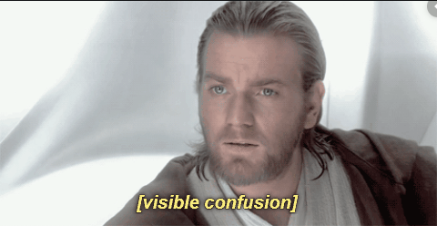
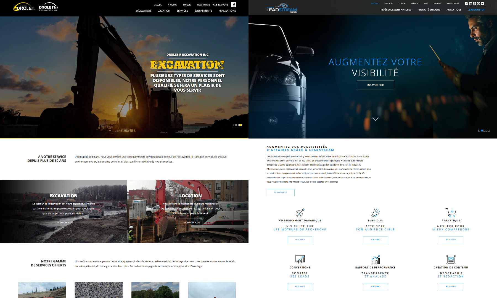
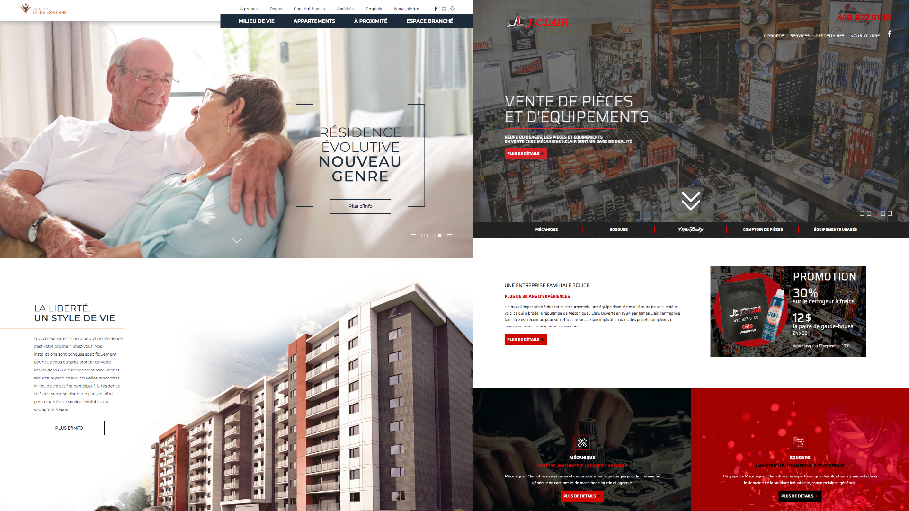
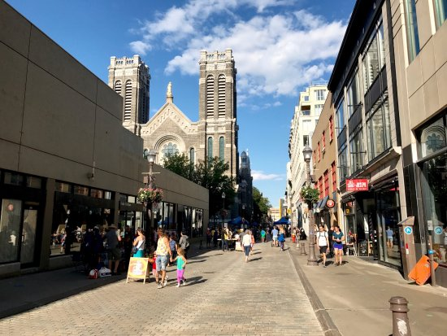
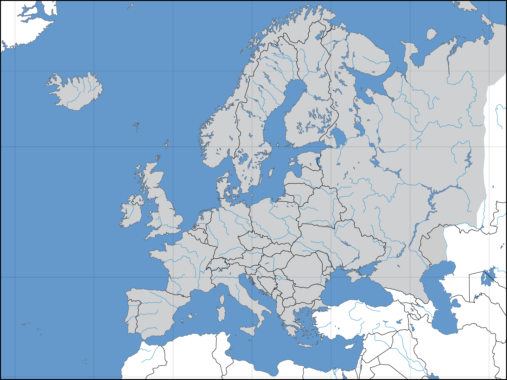
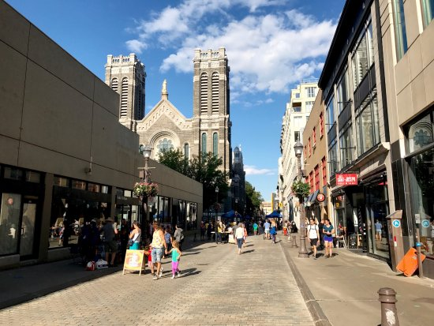
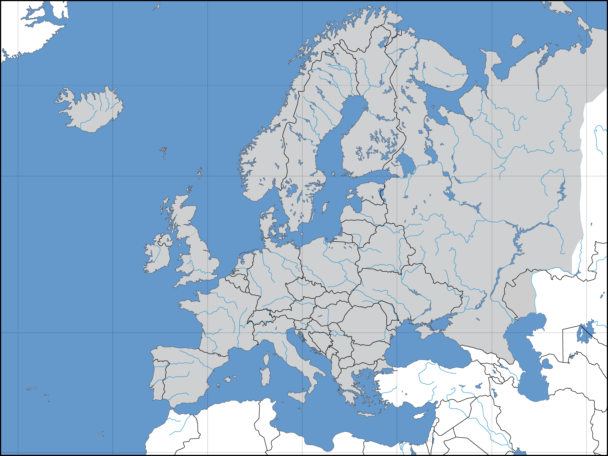

Gabriel Chouinard Létourneau
"We don't see things as they are, we see them as we are" -Anaïs Nin
Développeur Front-End
Pourquoi pas Scrum Master?

Intérêts et passions
- Photographie (Surprise)
- Écriture (Oui oui)
- Musique
- Voyages
- Haute-fidelité (Sennheiser fan)
- Escalade / Boxe
Parcours scolaire rapide
Êtes-vous prêt?
Parcours scolaire
- 2 années de doublées (Primaire et secondaire)
- 2 entrées aux adultes
- Une session en Sciences humaines
- Un brin en Tremplin DEC
- 1 année sabatique comme on dit
Stages et expériences
- Orage communication (Été 2018)
- Contrat chez Agence Option (Noël 2018)
- CSPQ (Été 2019)
Orage Communication
- Front-end
- Apprentissage rapide de JQuery, Google analytics et du référencement naturel
- Design Web basé sur les maquettes reçues
- Recherche d'images
- Mise en ligne
Orage Communication
Développement et mise en ligne de 4 sites web
Maintenance de contenus d'autres sites


Aspects préférés du domaine
- Javascript, Typescript, React (wink wink), React Native
- CSS et préprocesseurs
- Communication
- Gestion d'équipe & développement
- Création d'idées/conceptualisation identité visuelle


Et pour le futur?
 



Outils de veilles technos
- YouTube (remerciements à Stefan Mischook @Oli)
- Medium
- Daily 2.0 (Merci le coloc)
- Site Inspire, Web design inspiration